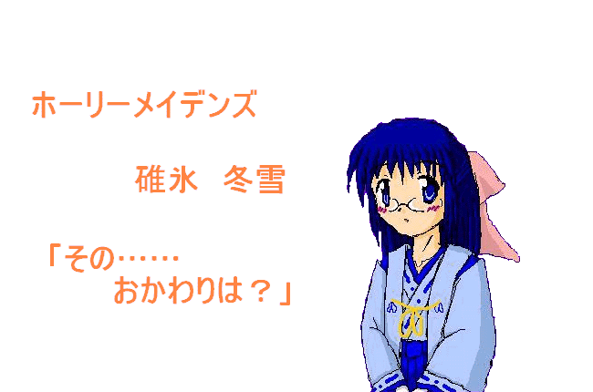

戻る
深夜。静まり返った漆黒の街を、疾走する一人の少年。ハッ、ハッ、と短く息を切らし、街灯の下を駆け抜ける。
「よう少年。そんなに走ってどこ行くんだ？」
突如、背中にかかる声。少年は、足を止める。振り返ると、そこには、よれよれのコートを着た中年男「山川夏夫」が。
嫌なやつに出会ったものだ。
「はは！ ようやく、自分の気持ちに従うようになったか。ったく、最初からそうすれば、終里ちゃんも救われたんじゃないのか？ あの娘は、心の奥底で、ずっと仲間を欲しがってたのに」
ニヤニヤとした笑いを浮かべながら、山川は言う。相変わらず、人を小馬鹿にしたような態度。少年はムッとし、思わず言い返す。
「うるせえよ。どうせ、あいつの心の支えになることなんてできないんだよ。オレじゃあ……三四郎先輩の代わりは無理だった」
「お前が、全力でぶつかることにビビッてたからだろ」
これまでのふざけた口調から一転し、ピシャリと言ってのける山川。少年は、思わずグッと言葉に詰まる。
「好きになった相手をまた失いたくない。だから、誰も好きにならないし、誰の味方もしない。そうやって、自分の気持ち誤魔化そうとしてたやつを、誰が好きになるっつーんだ」
少年は、言い返さない。ただ、山川をジッと睨んでいるだけ。
本当に、つくづく人の心を見透かしてくる。
「だけどよ、お前は変わった。ちゃんと自分の気持ち、伝えられたじゃねえか。まあ、振られちまったけどよ。もしか、今のお前なら、お友達レベルにはなれるかもしんねえぞ？」
再び、ニヤッと笑う山川。少年は、それを無視し、再び先を目指す。
そうだ、こんなのに構ってなんかいられない。急がないと、間に合わないかもしれない。やっと、自分の気持ちに気づいたのだから。
「あ〜あ、行っちまったよ。さぁて、俺もボツボツ行きますか。確か、朝風ここみの新刊が今日出るんだったっけ。いや、エーテルワークスの取材がまず……」
山川は、独り言を呟きながら、コートを翻す。
あと、五時間くらいで夜が明ける。胸に思いを秘め、各人は「旭小学校」へ。
ホーリーメイデンズ
最終夜「明日へ」
作：流離太
「行くぞ、渡辺！」
「はい！！」
秋綺と春花は、同時にオーヌサステッキを振り下ろす。
「鳴り響け、怒りの閃光！！」
「吹き荒れろ、青き風！！」
「『青嵐陣』！！」
二人が言霊を唱えた瞬間、巨大な竜巻が辺りを包み込む。
身を捩じらせ、旋風は砂嵐を辺りに撒き散らす。
青白い雷をまとい、ゴウゴウと轟く様子は、まるで龍虎の咆哮。
木々を、地面を、アヤカシを、次々と食い散らかしていく。
嵐が止むと、そこには、なにもなかったような静けさが。ただ、無数の残骸が散乱するのみ。
「キャ——！ 初めての合体技、大成功ですね！」
春花は秋綺に抱きつき、頬をスリスリとこすりつける。まるで、羽毛布団のように柔らかな感触が、秋綺の全身へ。戦いがひと段落したこともあり、全身の緊張が緩む。
——碓氷も、こんなに柔らかいのかな……って、なに考えてるんだよ、俺！？
「あれ、顔が真っ赤ですよ？ もしかして『碓氷もこんなに柔らかいのかな』なんて考えていたんですか？」
思わず、秋綺はカァッと顔を赤らめる。
「なんでわか……いやいや、そんなんじゃないから、マジで」
顔を離し、秋綺は顔を離す。横目で見た春花の口元には、黒い笑みが。
多分、全部お見通しなのだろう。悔しい。
その時。
「春花さん、秋綺さん！！」
昇降口から、少年の声が響く。目を移すと、そこには三四郎が。背中には、変身が解けた終里を背負っている。
「三四郎さん！！ 無事だったんですね！！」
春花は、安堵の笑みを浮かべ、駆け寄る。
「ええ、そちらもご無事で何よりです！」
「ふふ、あんなアヤカシくらいに苦戦する私たちじゃありませんよ。ねえ、秋綺ちゃん？」
「だから、その名前で呼ぶなって」
そう言いながらも、秋綺の顔は、自然とほころぶ。どうやら、八岐大蛇復活を阻止できた様子。先ほどの妄想を忘れ、秋綺はその豊かな胸を撫で下ろす。
「それで、夏月ちゃんと冬雪ちゃんは？」
瞬間、三四郎の笑顔が凍りつく。背中の終里は、気まずそうに顔を背ける。
不意に、秋綺の心を不安が駆り立てる。この二人の様子は、一体なんなのだろう？
「ねえ、どうしたんですか？ 終里さんが帰ってきたということは、夏月ちゃんたちもいるはずですよね？」
両者とも黙りこくったまま、決して口を開かない。その表情は、この空のように暗く、沈んでいる。
「ねえ、二人はどうしたんですか！？」
血相を変え、春花は三四郎を揺さぶる。見かねた秋綺は、急いでそれを引き剥がす。
「おい、やめろって」
秋綺が春花の顔を覗き込むと、その大きな瞳は潤んでいる。
「だって……だって、さっき戦ってる最中、とっても嫌な気分になったんです。まるで、二人が遠くに行っちゃうような……」
春花の言葉に、愕然とする秋綺。
それは、自分も同じ。丁度あの時、なんとも言えない悪寒が体を駆け巡った。心の中に、暗雲が立ち込める。もしかして、冬雪になにかが。
秋綺が思考を巡らせていた時、校舎の中から、紅い影が飛び出す。息を切らせたその姿は、紛れもなく夏月。
「夏月ちゃん！！」
パァッと顔を輝かせ、春花は夏月の手を取る。
春花……また会えて嬉しい。夏月は心の底から思う。だが、今はそれどころじゃない。
「ごめん春花、こいつを治してあげて！！」
夏月は、急いで冬雪を背中から下ろす。変身が解け、ところどころ緋色に染まったブラウス。その表情は、先程より蒼白い気がする。
「冬雪ちゃん！？」
春花はその翠がかった瞳を、一杯に見開く。
「碓氷……嘘だろ？」
呆然とした表情で、ふらふらと冬雪に近づく秋綺。冬雪の側に座り込み、その顔を覗き込む春花。二人とも、目の前のできごとが信じられないよう。
「冬雪ちゃん……死んだら駄目ですよ。一生のお願いです、目を開けてくださいよ。冬雪ちゃん！！」
「ったく、バッカじゃねえの？ 坂田が帰ってきたのに、お前がいなくなったら、意味ねえだろが。なあ……なんとか言えよ」
肩を震わせ、うつむく秋綺。地面には、雨でもないのに数滴の雫が。その背中に、三四郎は声をかける。
「落ち着いてください！！」
キッと顔を上げ、秋綺は三四郎に食いつく。
「これが落ち着いてられるかよ！！ お前だって、碓氷のことが好きだったじゃねえか！！ なのに、なんで落ち着いていられるんだよ！！」
「冬雪、生きてるよ！！」
必死の表情で、夏月は叫ぶ。春花はハッと顔を上げ、その耳を冬雪の胸に押し当てる。
「……動いてます。冬雪君、生きてます！！」
興奮した表情で、春花は叫ぶ。
「お願い春花、早く治して！！ じゃないと、本当に手遅れになっちゃう！！」
「は、はい！！」
春花はオーヌサステッキを構え、言霊を唱える。サァッと、絹糸のように柔らかな風が頬をなで、冬雪を包み込む。傷や血、服の裂け目が、まるで、時間を巻き戻すかのように引いていく。
その傍らで、秋綺は、三四郎の背中にいる終里に詰め寄る。
「おい、碓氷をこんな目に合わせたの、お前か？」
元々きつめな目を一層吊り上げ、声を震わす。そこには、押さえきれない怒気が込められている。それに対し、終里の口元には自嘲的な笑みが。
「あーあ、碓氷先輩が受け入れるなんて言ってたけど、結局それ？ くす、殺したいなら殺せばいいよ。アヤカシとも手を切っちゃったし、もう、疲れた」
「そんなこと言わないで下さいよ、終里ちゃん！！ 秋綺さんも、怒りを納めて下さい。冬雪君を刺したのは、こっくりっていうアヤカシで」
「関係ねえよ。そのアヤカシ操ってたのはこいつだろ？ 桃ノ木、さっさとその女降ろせ」
「降ろしません！！」
「やめて！！」
夏月は、堪らず叫ぶ。口論を止め、一斉にに顔を向ける秋綺たち。
辺りは、静寂に包まれる。そこには、物音一つない。
骨が砕けんばかりに、夏月は、両手の拳をギュッと握り締める。
「確かに……終里はダークメイデンだった。アヤカシを操ってたのも、この娘。だけど、あたしがあんなことしなければ、ここまでやらなかったかもしれない。それに……それに、冬雪だって……」
再び視界がぼやけ、目から熱い思いが溢れ出す。唇を噛み締め、夏月はそれを押しとどめようとする。
ダークメイデンとはいずれぶつかる。それは、夏月にもわかっていた。しかし、結果は違っていたかもしれない。みんな無事で、またいつもの日常が。だけど、もうそれは、過ぎ去ってしまったこと。
「おい……わかるように、きっちり話せよ」
秋綺は、極めて冷静な口調で、夏月に詰め寄る。
「夏月さん、いいんですか？」
心配そうな顔をする三四郎に、夏月はぎこちない笑顔を向ける。
「うん。あたしが黙ってたからこうなったんだもん。ちゃんと話す」
もう、誤魔化しきることなんてできない。自分のまいた種は、自分で刈り取らないと。たとえ、そのために嫌われたとしても。
覚悟を決め、夏月は口を開く。
夏月の口から事実が飛び出すたびに、春花と秋綺は驚きを露わにする。
冬雪に昔、怪我を負わせてしまったこと。
終里をいぶりだすため、三四郎を利用しようと考えていたこと。
そのために、春花を騙したこと。
話し終えた夏月は、二人の顔を、まともに見れない。我ながら、本当に最低なことをしたと思う。
春花と秋綺は、相変わらず押し黙っている。多分、その目線は、軽蔑に満ちているだろう。それも、自分のしたことから考えれば、当然のこと。
だけど、できれば……できることなら、もう少しだけ、友達でいたかった。
夏月が、そのような考えを巡らせていた時。
「碓氷先輩！」
終里の驚いたような声が、耳に飛び込む。思わず、夏月はバッと顔を上げる。視線の先には、むっくりと起き上がった冬雪が。
「冬雪！！」
肩まであるポニーテールを揺らし、冬雪に駆け寄る夏月。そのまま力いっぱい抱きしめる。本当によかった、冬雪が生きていて。自分には、冬雪のいない世界なんて、想像もつかない。
「ごめんね、冬雪。あたし」
「あなた……だれ？」
——え？
思わず耳を疑う夏月。
冬雪は、不思議そうに顔を傾けている。邪気が感じられないその表情は、赤ん坊のよう。瞳には光がなく、とろんとしている。
「おい、碓氷。こんな時に、冗談は止めろよ！」
秋綺の言葉に構わず、冬雪は辺りをキョロキョロと見回す。
「ねえ……わたし、なんで、こんなところに？」
わたし？ これまで女の子になった時、一度も「わたし」なんて言ったことはない。一体、冬雪に何が……。
「これって……呪い」
「正確には違うけど、こっくりの仕業であることは間違いないね」
冬雪の背中から、ピョコッと何かが顔を出す。メロンパンのようなふわふわとした甲羅、ビーズのような瞳を持つ聖獣「玄武」。
「冬雪が死なないよう、なんとかカバーしたつもりだったけど、失敗したよ。まさか、心を壊されるなんて。そうだろ、アヤカシの巫女？」
玄武はそう言って、顔を上げる。その視線の先には、終里が。
「おい、源。どういうことか、説明しろよ？」
グィッと終里の胸倉をつかむ秋綺。終里は、セーラー服の襟を両手で握り締めながら、ポツリポツリと話す。
「アヤカシ十二神将、筆頭『こっくり』は、唯一終里が生まれる前にいたアヤカシ。だから、その能力は、性転換じゃなくて、心に関するもの。心を、自在に読み、相手の心を、九本の尻尾で、まさぐる」
「じゃ、じゃあ、冬雪ちゃんは、そのこっくりっていうアヤカシのせいで」
終里はうなずく。
「今の性格は、自分の体を見て、再構成されたものにすぎない。記憶や性格が、完全に破壊されてる。ホーリーアクアに変身できないだけじゃない。男だったことや、その感覚、先輩たちのことだって。ううん、自分のことだって、忘れてるはず……」
夏月は、終里の前に割り込む。
冗談じゃない。そう簡単に、忘れられてたまるもんか。
「ねえ、終里！ 治す方法はあるんでしょ？」
「そうです！ 確か、私と冬雪君が入れ替わった時も、一日くらいで元に戻りました。こっくりを倒したんですよね？ だったら、そのうち元に戻るはずです！」
しかし、終里はうつむきながら、ゆっくりと首を横に振る。
「残念だけど、無理だよ。一度壊れたものは、二度と元には戻せない。たとえ巫女の力を取り戻したとしても、その時の記憶がない限り、男には戻れない」
夏月は、底が見えないほど深い暗闇に、叩き落される。そこには、光が全く見えない。目の前の少女は、冬雪であって冬雪でない。つまり、いなくなってしまったんだ。冬雪は。結局、守れなかった。あの日、誓ったはずなのに。
その時だった。空気が、ピンと張ったテグスのように張り詰める。
顔が自然と強張り、瞳には緊張の色が浮かぶ。体は、まるで氷にでも閉じ込められたかのように、ピクリとも動かない。
オォォォォォォォォォォォンン……
ビリビリと体を震わす雄叫びが、旧校舎から聞こえる。地の底から響くような声は、まるで亡者の断末魔。
ジットリと、夏月の体全体から、暑くもないのに汗がにじむ。心臓の鼓動は早まり、自然と息づかいが荒くなる。恐らく、ヒグマと遭遇したとしても、これほどの威圧は感じないだろう。
刹那、夜の闇でさえ敵わないほどのどす黒い闇が、昇降口から噴出する。その勢いは、まるで、噴火口から際限なく湧き出すマグマのよう。ボコボコと泡立ち、ヌルリと漆黒の蛇が鎌首を持ち上げる。
オォォォォォォォォォォォンン……
再び吼える大蛇。身の丈は、約十メートルほど。その目は闇の中で紅々と輝く。大木のような八つの首からは、黒い粘液が絶えず滴り落ちている。
「や、や、八岐大蛇！！」
三四郎は、大きくのけぞる。秋綺は大声で怒鳴る。
「一旦引くぞ！！」
その声を聞くや否や、夏月は冬雪の手を引き、校門まで走る。
「ハァ……ハァ……」
夏月は電柱に手をつき、息を切らせる。
ついに、蘇ってしまった。最強のアヤカシが。初代が苦戦したほどの強敵。一体、どれほどの力を秘めているのだろう。
夏月は、旭小学校の方へ目を移す。そして、思わず、自分の目を疑う。
月光を浴び、大蛇の首がスルスルと、まるでろくろ首のように伸びていく。ガパッと口を大きく広げ、家の瓦を喰いちぎっている。いや、家ではなく空間ごと。無残にも剥ぎ取られた場所には、ポッカリと漆黒の空間が広がっている。
「マジかよ……あいつ」
「八岐大蛇は人間のあらゆる闇を司る存在。光を食み、永遠の夜を作り出す」
秋綺の言葉を受け、終里は淡々と解説する。
「黄泉比良坂はそんな大蛇が作り出した暗黒の世界。光は月明かりだけで、時間の進み方だって現実より遅い。ほら、先輩たちが黄泉比良坂に入ったのは昼時なのに、今は深夜の二時くらい」
「要は、竜宮城みたいなものですね？」
三四郎の問いに、終里はこっくりうなずく。
「だけど、黄泉比良坂と現世は統合され始めている。見て、校舎が未だに旧校舎のままでしょ？」
言われて目を移す。確かに、相変わらず木造校舎が静かにたたずんでいる。それに、ゲートは零時でなければ現世と繋がらないはずなのに、自分たちは出ることができた。
「大蛇が全ての光を喰らったら、陽は永遠に射さないよ」
「あ、あいつ、そんなに危険なんですか！？」
素っ頓狂な声を上げる三四郎。秋綺は、冷ややかに答える。
「まあ、五人の巫女が苦労して封印したやつだ。それくらい当然だろ？」
「どっちにしろ、早く対抗策を考えないと」
「でも、冬雪君が……」
三四郎がそう言った時、夏月はすっくと立ち上がる。冬雪の側を離れ、ブーツの向きを校門へ向ける。
「おい、坂田。どこにいくんだよ？」
「決まってるでしょ。大蛇を……倒す。あたし一人でね」
夏月は、ギュッと唇を結ぶ。琥珀色の瞳には、覚悟の光が。
終里の言った通り、八岐大蛇は強大。一人では敵わないかもしれない。だけど、冬雪を守るのは自分の役目。心が死んでも、せめて命だけは守らなければ。それに、これは全部自分のせい。責任を、果たさないと。
「大丈夫、あんたたちには迷惑かけないから。だけど、せめて冬雪の側に」
「いい加減にしてください！！」
背中に、怒声が突き刺さる。ビクッと体を震わし、夏月は振り向く。そこには、厳しい視線を向ける春花が。
「なんでそうやって、なにもかも背負い込もうとするんです！！ 三四郎さんに嘘吐いたこともそうです。そんなことしなくたって、私たちに相談してくださいよ！！ 夏月ちゃん、冬雪ちゃん、秋綺ちゃん、私の四人で、ホーリーメイデンズじゃないですか！！」
夏月の脳裏に、初めて出会った頃の春花が蘇る。ひとりぼっちで、他人と馴染めない、どことなく冬雪に似ている少女。だけど、今の春花からは、それが感じられない。その様子は、しなやかで力強い、風そのもの。
そのようなことを考えている夏月の肩に、ポンと白い手袋を穿いた手が置かれる。秋綺だ。
「坂田。碓氷も渡辺も、本当に変わったよ。もう、お前に守られるだけじゃねえ。だから、もっと俺たちのこと頼ってもいいぞ？」
呆けた表情で、夏月は口を開く。
「あたしのこと……怒って、ないの？」
「怒ってますよ、ものすごく！ だけど……夏月ちゃんがいなくなるのは、もっと嫌です」
ふわりと、夏月を抱きしめる春花。耳元で、小さくささやく。
「この戦いが終わったら、みんなで縁日に行きましょう。ここにいる六人で。勿論、夏月ちゃんも付き合ってくれますよね？」
あの時の冬雪に感じた暖かさ。どんどん重い荷物が崩れ落ち、体が軽くなっていくのを感じる。春花も冬雪も……本当に強くなったんだ。
「春花……ありがとう」
夏月は体が震え、それしか言えない。こんな自分を許し、また受け入れてくれるなんて。自分には冬雪しかいないと、ずっと思っていたのに。
それを見て、秋綺は口の端を吊り上げる。
「それじゃあ、反撃開始と行くか」
一同は、大蛇の方へ顔を向ける。八本の首は濁流のようにくねり、空間を貪る。星空に、家々に、山に亀裂が走り、バラバラと硝子のように崩れる。確かに、急がなければならない。
「じゃあ、俺と渡辺で大蛇抑えとくぞ。ちっと辛いと思うけど、さっきの延長戦だ。その隙に桃ノ木と源は、五芒星を東西南北にそれぞれ書く。丁度、大蛇を囲むようにな」
秋綺はそこで、夏月に目を向ける。
「そして、坂田は碓氷についてやってくれ」
夏月は、冬雪に目を向ける。冬雪は脚を投げ出し、その場に座り込んでいる。その視線は虚ろで、ボゥッと宙を見つめている。
確かに、今の冬雪は心配。だけど、これ以上、みんなに甘えてなんかいられない。
夏月は顔を上げ、大きく首を振る。
「あたしだって戦う！！ みんなががんばってるのに、やだよ！」
それを、秋綺は制す。
「坂田、無理するな。お前、体中ボロボロじゃねえか」
確かに秋綺の言う通り、テケテケとの戦いで体中は切り傷だらけ。だけど。
「それに、碓氷はこの戦いに必要だ。メイデンズ全員が揃わなきゃ、大蛇は倒せねえ。その碓氷を引き戻せるとしたら、お前しかいないだろ。お前と碓氷の絆は誰よりも強い。そこに俺や桃ノ木が入るスペースなんてねえよ」
「あれぇ、三四郎さんはともかく、なんで秋綺ちゃんが入ろうとするんですかぁ？」
「う、うるせえんだよ、お前はいちいち！ 例えだよ、例え」
そんな春花と秋綺のやり取りを尻目に、終里は夏月に目を向ける。
「坂田先輩。碓氷先輩、言ってたよ。『このまま戻れなくなったとしても、夏月のことを好きでいられると思う』って。本当に、坂田先輩のことが好きだったんだと思う。碓氷先輩はこの戦いに必要。あの人を連れ戻すのは、立派な義務だよ」
夏月は、うつむきながら、彫像のように黙りこくる。
しばし沈黙が続いた後、夏月は顔を上げる。その表情は、先ほどとはうって変わり、闇を照らすほど明るい。それはさしずめ、真夜中の太陽。
「わかった。だけど、死んだりしないでよ！ あたしが、このバカの目覚ますまでさ！」
自分には、冬雪を呼び戻す責務がある。それが、自分にできる償いなら、願ってもみないこと。
「ほんじゃ、行ってくる。桃ノ木、小便ちびってないよな？」
「大丈夫です！ 驚きすぎて、出そうと思っても出ません！」
秋綺、春花、終里、三四郎は、それぞれの持ち場へと走っていく。それを目で見送り、夏月は小さく呟く。
「がんばって……」
それは、聞き取れないほど小さな声。だけど、心には届いたはず。
「冬雪……」
夏月は、そっと冬雪の前に座り込み、その目を見つめる。しっとりと濡れた瞳は、相変わらず視界が定まっていない。
「あたしが知らない間に、いっぱいいっぱいがんばったんだね」
今でも信じられない。あの冬雪が。だけど、開かずの間で見せた優しい目線。あれが、全てを語っている。本当に、冬雪は強くなったんだ。
「ふゆ……き。それが、わたしのなまえ？」
「うん、そうだよ。そして、あたしは夏月。あんたの幼馴染」
キョトンと、冬雪は不思議そうに首を傾げる。こうしていると本当に、ただの女の子にしか見えない。
「それじゃあ、あなたとわたしはおともだちだったの？」
そっと、夏月はその艶やかな髪を撫でつける。ふわりとした柔らかな感触が、手に返ってくる。
「驚かないで聞いてよ？ 覚えてないかもしれないけど、あんたはあたしのこと好きだって言ってくれた。……本当は、男の子だったんだよ」
サァッと、駆け抜ける夜風。月明かりを反射し、長い髪はサラサラと流れる。その様子は、空に架かる天の川のよう。
「わたしが、おとこのこ？」
力なく、冬雪は笑う。
「おもしろいじょうだん……いうね。みてわからない？ わたし、りっぱなおんなのこだよ」
その言葉は、吹雪のような冷たさを帯び、夏月の胸に突き刺さる。ぐらぐらと、揺らぐ心。どんどん今までの記憶が、遠くへ霞んでいく。ひょっとしたら、冬雪は最初から女の子だったのでは？ 今まで見ていたのは、長い、長い夢……。
夏月は、自分の両頬を、手のひらで思い切り叩く。
いけない、なに考えているんだろう。そうだ、夢で終わらせるもんか。冬雪と過ごした十四年間だけじゃない。それは、春花や秋綺と出会ったことをも否定することになる。
「ううん。あんたは間違いなく男だった。いい、最初からよく聞いて？」
夏月は、白樺の小枝みたいに細い冬雪の両手を、握り締める。
絶対、思い出させてやる。冬雪には、まだ言っていないことがある。そう、大事な大事な秘密が。
戦いは、先ほどから続いている。
大きく首をくねらせる大蛇。
その口中から、紅蓮の火球が次々に飛び出す。
それは、まるで機関銃のごとく。
勢いよく、終里たちへと迫る。
「青春陣！！」
春花が言霊を唱える。
瞬間、辺りに柔らかな風が吹き抜ける。
それは絹糸のように、優しく終里たちを包み込む。
「くぅ……！！」
春花は顔をゆがめ、必死にステッキを押し出す。
「う……ぅっ！」
が、風はこらえきれず、粉々に砕ける。
途端、スコールのように降り注ぐ焔。
地面が砕け、アスファルトの破片や土埃が舞う。
そして、その猛威は、終里にも。
それは、彼女の小さな体を、跡形もなく燃やし尽くしてしまうほど大きい。
——やられる！！
サッと体中の血の気が引く。逃げることを考える暇さえない。
そのまま火球は、終里の目前へ。
その時、終里を大きな腕が抱きとめる。その格好のまま、二人はゴロゴロとアパートの陰へ。
「大丈夫ですか、終里ちゃん！？」
頭に響く、優しげな声。顔を見なくてもわかる。
「三四郎……先輩？」
背中に、温もりを感じる。いつも部活が終わると、自分の頭を撫でてくれた大きな手が。
「よかった、なにもなくて。いやあ、間一髪でしたね」
三四郎は立ち上がり、その場に終里を降ろす。そして、背中を向けたまま、口を開く。
「終里ちゃん、ここで休んでいてください」
え？
「あと二箇所です。がんばれば、僕一人でもできます」
「で、でも！」
終里は、そこで気づく。三四郎が、足を引きずっていることに。
——まさか。
「先輩……もしかして、怪我」
「大丈夫です！ こんなの……メイデンズのみなさんに比べたら……」
にっこりと、笑顔を向ける三四郎。額からは、赤い筋が数本垂れている。
「すみません……頼りない先輩で。これは、終里ちゃんの力になれなかった……罪滅ぼしです」
そんなの、三四郎は全然悪くない。あれは、自分が勝手にやっただけのことなのに。だけど、その言葉が喉に引っかかり、出てこない。
「それに、女の子だけがんばらせるって……格好悪いですよ。特別な力なんかなくたって、僕は……僕は、やってやります！ お荷物になるのは、たくさんです！」
チョークを握り締め、三四郎は歩き出す。何度も転びそうになりながら。だけど、その背中は、本当に力強い。ダークメイデンだった頃の自分なんかよりずっと。
——あれが、本当の強さ。
——碓氷先輩も、いや、メイデンズの全員がそれに支えられている。
終里は、自分の無力さを噛み締める。前までの自分なら、わからなかった。
——終里もほしい。
——相手を倒す力じゃない。
——大事な人を、守るための力が。
「じゃあ、やろうか？ オレが」
終里の視線が、声の方へと向く。そこには、頭をスポーツ刈りにした、小柄な少年が。終里には馴染み深い。ことあるごとに自分をからかい、喜ぶ存在。クラスメイトでバスケ部員の、グドンこと「野々宮 始」。
「始！？」
驚きを隠せない終里。なんでこんなところに？ そして、なぜこの事態に驚かない？
それに対し、始は、チッチッチと人差し指を左右に揺らす。
「ごめん、騙してて。実は『野々宮 始』なんて人間は、実在の人物・団体とは一切関係ないんだよな、これが」
そう言うや否や、始の体を金色の光が包み込む。神々しいほど、まばゆい光。思わず、目をつぶってしまう。
光が弱まり、終里は、うっすらと目を開ける。
そこには、両手で包み込めるくらいの黄色い物体が、ぱたぱたと小さい羽を羽ばたかせ、浮かんでいる。それは、小型の竜だ。黄金色の体色、ピョコンと突き出た尻尾や角、短い手足、トカゲに似た顔はどことなく愛嬌がある。
「もしかして……『黄竜』？」
間違いない。中央を司る、大地の聖獣。
「へへっ、そういうこと！ オレさあ、ずっとメイデンズを見てたんだぜ。先代のそのまた先代、いや、最初からずうっとずうっと。ま、人間なんかに手を貸すつもりは今日までなかったけど」
黄竜は、ふわりと終里の前に降り立つ。
「だけど、冬雪先輩見てて思った。この人は、自分が好きな人のためには、本当に必死なんだ。役に立つとかそういうのじゃなくて、大切な人を守ろうとする。相手が、自分のことをどう思ってようと、関係なしにな。そういうのも悪くないんじゃないかなって、考えるようになったんだ」
黄竜は、終里に顔を向ける。同時に、固い棒のような感触が、手に訪れる。ふと見ると、そこには琥珀色のオーヌサステッキが。
「もう、自分の気持ちに嘘を吐けない。オレは、人間を……終里をいつの間にか好きになっていたんだ。自分のパートナーとなるお前、つまり土の巫女『ホーリーガイア』を興味半分にからかっているうちにな」
——終里が……五人目の戦士？
信じられない。まさか、ダークメイデンとして、メイデンズと敵対していた自分が。それにしてもあの告白、冗談じゃなかったのか。三四郎、冬雪、そして始。自分を受け入れようとする人間が、三人もいるとは。
「オレはさっきも言ったように、お前を……お前の未来を守りたい。だから終里、力を貸してくれ」
終里はうつむき、口を大きく歪める。
力を貸してくれ、だって？ そんなの、決まっている。
「くすくす、碓氷先輩には貸しがあるしね。今回だけだよ」
終里はそう言いながら、オーヌサステッキを構える。
自分も黄竜と同じ。なにかをしてもらうために戦うのではない。相手が好きだから戦う。だからこそ、冬雪は強かったのだろう。
「古（いにしえ）は天地未だ剖れず、陰陽（めを）分れざりし時、渾沌（まろが）れたること鶏子（とりのこ）の如くして、ほのかにして牙（きざし）を含めり。……時に、天地の中に一物生（ひとつのものな）れり。伏葦牙（かたちあしかひ）の如し。すなわち神となる。国常立尊と号（もう）す」
言霊を唱え終えた時、金色の光が終里を包み込む。千早や手袋、ストッキングの色は黒から白、袴は紫から漆黒へと変化していく。月明かりの白と闇の黒。その姿は、まさしく夜の使者。間もなく「ホーリーガイア」への変身は完了した。
（行くぞ、終里！）
こっくりとうなずき、終里は駆け出す。この力で、大切なモノを守るため。そう、仲間という名の。
「……はなしはわかった。だけど」
冬雪は、困惑した表情を上げる。
「しんじられない。わたし、みこなんかじゃない。ふつうのおんなのこだよ？」
玄武は顔をゆがめ、熱を帯びた口調で叫ぶ。
「冬雪、君にとって、みんなと過ごした記憶はそんなものなのかい！！ 思い出すんだ！！」
ビクッと体を震わす冬雪。その瞳には涙がにじみ、困惑しているよう。
「そんなこといわれても……わたし、わたし、わかんないもん！！」
体を縮め、冬雪は顔を覆う。とても、記憶を呼び戻すどころではない。それを見て、夏月は目を伏せる。
「……もう、いいよ」
途端に、玄武は焦燥を露わにする。
「な、なにを言ってるんだ君は！ 冬雪がこのままでいいのか！？ それでも冬雪を」
「いいわけないでしょ！！」
夏月は、キッと玄武を睨みつける。
そんなこと、わかっている。冬雪は、誰よりも大切な幼馴染。いや、もう二人で一つと言っても良いほど。
だけど、冬雪は嫌がっている。こんな冬雪、見てられない。今思い出せないなら、ゆっくりと思い出せばいい。
夏月は、冬雪のなだらかな肩に手を置く。
ごめん、春花、秋綺、三四郎、終里。自分には、なにもできない。本当に、無力だ。
夏月は、そっとささやく。
「ひっく……ごめん、冬雪。あ、あたし……冬雪の力になれなかった……」
今日、何度涙を流しただろう。今度泣く時は、嬉し涙って決めていたのに。
「でも……でも、これだけは聞いて。あんたが好きだって言ってくれた時、本当に嬉しかった。あたしも同じだから」
夏月は、冬雪に顔を寄せる。
「たとえ、あんたが女の子のままだったとしても……あたしが好きなのは、冬雪だけなの」
夏月は、静かに唇を重ねる。あの時と同じ、甘く、柔らかな感触が全身に行渡る。まるで、小さな果実を口に含んでいるよう。
冬雪はそれに呼応し、夏月を抱きしめる。同時に、夏月の口に小さな舌が。それは、お互いを離すまいと絡み合う。
「んん……」
「ん……ふっ」
混ざり合う唾液。同じ女の子の体だからだろう。冬雪と、これまでにないほどの一体感を感じる。息づかい、肌の温もり、胸の鼓動さえも、溶け合って一つになっていく。
「——って、ひゃめろっての！！」
夏月は、顔を赤面させ、冬雪に手刀をかます。
「はみゅっ！？」
そのショックで、お互いの舌を噛んでしまう。冬雪は顔を離し、泣き言を言う。
「ふぇ〜ん、ひりょいよなちゅきぃ！ 僕……ほんの出来ごこりょだったのにぃ……」
「うっひゃい！！」
プイッと顔を背け、夏月は口を押さえる。
どこの世界に、中学生でディープキスをかます馬鹿がいるというのだ。全く、油断も隙もあったものじゃない。
——……「僕」？
夏月は、ハッと振り向く。
「ただいま、夏月」
白い月明かりを受け、笑みを浮かべている冬雪。その瞳は、碧い宝玉のような輝きを取り戻している。
「ふ……ゆき？」
夏月は、呆けた表情のまま、立ち尽くす。喉からは、声も出ない。が、次の瞬間、抑えていた気持ちが一気にあふれ出す。
「冬雪ぃっ！！」
声を張り上げ、夏月は冬雪の胸に飛び込む。そこは暖かく、まるでお風呂にでも浸かっているかのよう。そんな夏月の頭を、冬雪は優しく撫でる。
帰ってきた。帰ってきたんだ。冬雪が。もう、二度と会えないかもしれないと思っていたのに。
「バカぁ！ あたしが……あたしが、どれだけ心配したと思ってんの……」
「ごめんね、夏月……本当に、ごめん」
口で謝りながら、街の中心に目を向ける冬雪。そこには、邪気の立ちこめる、黒々とした闇が広がっている。冬雪は、碧いオーヌサステッキを握り締め、口を開く。
「行こう。みんなが待ってる」
「うん！」
元気よくうなずく夏月。そのまま二人は、決戦の場へと駆け出した。
秋綺は、迫る火球を雷槍で防ぐ。
ガツンと、重い衝撃が何度も叩きつける。
まるで、熱した鉄球で殴りつけられているよう。
——くそっ！ なんて力だ……。
これまで、様々なアヤカシと戦ってきた。しかし、この一撃一撃は、そのどれよりも強い。正直、さばくことで精一杯。
秋綺は歯を食いしばりながら、ふっと前に目を移す。
そこには、新幹線の勢いで、地面スレスレに伸びる首が。
それは、ガパッと大口を広げ、秋綺をはさみ込む。
「ぐあっっ！！？」
歯を食いしばる秋綺。
ミシミシという悲鳴が、体中から。
体の芯まで、激痛が響きわたる。
——こんなところで負けてたまるか。
——こんなところで。
——こんなところで。
秋綺は、その細腕に全力を込め、顎を開こうとする。
が、それは、まるで万力のように、秋綺の体を砕こうとする。
その時だった。
目の前に、突如黒い影が躍り上がる。
それは、白と黒の巫女服に身を包んだ終里。
「地絶刃！！」
振り下ろされる、黄金の鎌。
まるで影のように立ち尽くす終里。それは、亡者をあの世へといざなう死神のよう。
太い首が弾け、牙から解放される秋綺。その場に噴水のようなしぶきが立ち上る。
「おい……その姿」
「くすくす、そうだよ。終里が五人目の巫女。そんなことより、だらしないね。天下のメイデンズ様が」
「うるせえ」
不機嫌そうに顔を背ける秋綺。
やっぱり、こいつだけは好きになれない。たとえ、こうして助けられても、素直に喜べない。いや、それはとにかく、まさか終里が五人目の仲間だったとは。
秋綺がそのような思考を巡らせている時。
「う……ゲホッゲホッ、ゴホッ！！」
突如、その場にうずくまり、激しくせき込む終里。手袋がじわりと朱色に染まっていく。指の股からは、ポタポタと紅い雫が。
秋綺は顔色を変え、終里の顔を覗き込む。
まさか、自分を守ったせいで攻撃を？ 今までの終里から、想像できない。
「キャハハ、勘違い……しないでよ。終里はねえ、碓氷先輩への借りを、返したいだけだから。戦力が消えるのは……終里のとって、マイナス。それに、渡辺先輩よりは……マシ」
終里に言われ、春花のいた方へと目を移す秋綺。そこには、グッタリとした春花が横たわっている。ところどころ焼け焦げた鶯色の巫女服。切れ目から見える白い肌は傷だらけ。ゆったりとした三つ網は解け、血溜まりの中に揺らめいている。
「渡辺！！」
急ぎ駆け寄り、春花を抱き起こす秋綺。翠がかった半開きにし、春花は息も絶え絶えに言葉を漏らす。
「秋綺ちゃん……大丈夫ですか？ 今、回復を」
「なに言ってやがる！ 自分の体力も回復できないくらいなのに……」
秋綺は春花をその場に横たわらせ、大蛇に視線を向ける。
「お前はここで休んでろ」
山吹色だった巫女服は、今や朱一色に染まっている。袖もボロボロで、海草のよう。
目が霞む。体の節々が痛む。足がガクガクと震える。正直、このまま倒れてしまいたい。
だが、負けてなるものか。ここで倒れていては、冬雪や春花に合わせる顔がない。なにより、終里にいい格好させてたまるか。
——立て。
——立つんだ、卜部秋綺。
秋綺は覚悟を決め、雷槍に持たれかかる。足が思うように動かない。どうやら、折れているよう。だが、関係ない。
大蛇は首を一斉にもたげる。
その口には、うねる炎が。
——来る！！
死力を振り絞り、秋綺は身構える。
その時、ちらちらと白いものが目に留まる。まるで、この世のものではないかのような、穢れなき色。舞い落ち、肌の上で溶けてしまうそれは——雪。
——なんで、こんな季節に？
次の瞬間、胴体から離れる八本の首。
空を舞い、大蛇の頭は、闇に霧散する。
秋綺は口を開け放ち、二つの影を見上げる。雪が降りしきる中、ボゥッと浮き彫りにされる蒼と紅の巫女服。髪や広い袖をたなびかせながら、二人は声を揃えて言い放つ。
「お待たせ！」
「夏月ちゃん！ 冬雪ちゃん！」
春花は、歓喜の声を上げる。その表情には、明るい春の日差しが。まるで、先ほどまでの怪我が嘘のよう。その様子に、なんだか秋綺まで力が湧いてくる。
「ったく、来るのが遅えんだよ」
ニッと笑う秋綺。
そういえば、痛みがいつの間にか消えている。恐らく、あの雪は回復の術。もう、吹雪は止んでいる。
秋綺がそのような考えを巡らせている時、遠くから三四郎の馬鹿でかい声が響く。
「秋綺さ——ん！！ 準備、完了です！！」
言うや否や、三四郎は仰向けにばったりと倒れる。どうやら、もう限界だったらしい。
三四郎はよくがんばった。今は、ゆっくり休んで欲しい。これからは、自分たちの番。
メイデンズは全員集合し、大蛇を倒す準備も整った。まさに、万全の状態。
「よし、じゃあ作戦を発表する。いいか、やつを倒すのは今の俺たちには不可能だ。桁が違いすぎる。だから、もう一回封印する。今、桃ノ木がやつの周りに門を敷いた。源、お前はそれを黄泉比良坂に繋げてくれ。本当は俺がやろうと思ってたけど、境界を司るお前の方が適任だ。その間俺らは、やつを弱らせる」
五人は、一斉に大蛇に目を向ける。ブクブクと沸騰する大蛇の体。そこから、まるで間欠泉が吹き上がるかのように、新たな首が現れる。
「さっさと終わらせて……帰るぞ！」
「「「「オ——！！」」」」
五人は、オーヌサステッキを頭上に掲げ、交差させる。今、最後の戦いが、始まったのだ。
八本の首から、次々と攻撃が繰り出される。
冬雪たちは、飛び上がり、それを回避する。
「嵐琴！！」
「フツノミタマ！！」
「轟雷戟！！」
「ムラクモ！！」
思い思いの武器を形成し、空を駆け抜ける冬雪たち。
闇の中、蒼、紅、翠、黄の閃光がきらめく。
尾を引きながら闇を切り裂く姿は、まるで流星。
ひらりひらりと袖をはためかせ、縦横無尽に駆け巡る。
怒涛のごとく攻撃は続く。
吹き荒れる風。
巻き起こる焔。
突き抜ける雷。
躍り上がる渦。
いずれも鋭い刃となり、轟音と共に大蛇を貫く。
その巨体に、次々と蜂の巣のような風穴が。
次第に、大蛇は防戦一方となる。
それに対し、メイデンズは、次第に素早さを増していく。
目と目を通わせる四人。
攻撃を隙間なく、敷き詰めていく。
それは、あたかも一つの意思で動いているかのよう。
敵は、これまでの中でも最強。満身創痍の自分たちが、まともに相手をできるはずはない。しかし、今の冬雪には、負ける気が全く起きない。多分、他のみんなも同じだろう。
「繋がった……繋がったよ、門が！！」
叫ぶ終里。と同時に、眩い純白の光が溢れ出す。
そのまま地面を走り、大蛇を囲む。
その漆黒の巨体は、白いヴェールに覆われたかのよう。
大蛇は、首を振り回し、光をなぎ払おうとする。
しかし、まるでそこに壁でもあるかのように、ガツンとぶつかる。
「離れるぞ！ 五方向から、やつを囲むんだ！！」
秋綺の声に従い、冬雪たちは地面に降り立つ。
「渡辺、まずはお前だ！！」
「はい！！」
春花は、オーヌサステッキに意識を集中する。
いつも一人で、光を求めていた自分。深い闇の中に飛び込み、夏月は自分の手を引いてくれた。そして、今度は冬雪と秋綺が。その恩を返してもいないうちに、倒れたくない。
春花の体を、光が覆っていく。オーヌサステッキを振り上げ、夏月に向かってそれを放る。
「夏月ちゃん！」
夏月は光を、同じくステッキで受け取る。
決して自分は人に弱みを見せなかった。じゃないと、冬雪を守れないと思っていたから。自分なんて強くない。冬雪が……いや、今はみんながいるからがんばれるんだ。
「終里！」
光を受け継ぎ、終里は周りに目をはせる。
友達。そんなの、お互いの傷を舐めあってるだけのもの。そう自分に言い聞かせていた。だけど、本当は光を怖れていただけ。もう光を手放せない。三四郎と出会った、あの日から。
「卜部先輩！」
秋綺は、片手でそれを受ける。
最初、冬雪たちが気に食わなかった。ベタベタして、なにが楽しいのか。群れるなんて、面倒くさいだけ。だけど、いつからだろう。冬雪たちから、離れたくないと思い始めたのは。今だけは、素直になろう。
「頼んだぜ……碓氷！！」
四人分の想いが、冬雪の手に圧し掛かる。
今まで、ずっと嫌いだった。弱虫で、優柔不断で、頼りない自分が。何度変えようとしても、結局は直せない。今なら言える、メイデンズでよかったと。夏月だけじゃない。みんながいると、わかったから。
冬雪は、スゥッと目を開ける。途端に、光は空へと駆け抜ける。冬雪の手には、天を突くほどの剣が。
——だから、負けられない。
——僕はみんなと……ずっと一緒にいたい。
——たとえ、世界中を敵に回したとしても、怖くなんかない。
——この六人なら。
「木火土金水！！ 闇を照らせ『アメノハバキリ』！！！」
巨大な剣が、大蛇に向けて、勢いよく振り下ろされる。
縦一閃。
ズンッという鋭い音が響き、大蛇は真っ二つに。
オォォォォォォォォォォォォンン……
天高く、大蛇は吼える。
その悲痛な鳴き声すらも、閃光は包み込む。
まるで、溶けるかのように、薄れる輪郭。
大蛇は、その身を激しく蛇行させながら、ズブズブと闇の中へ沈んでいく。
光は、まもなく消える。それと同時に、辺りは風の音一つない静寂へ。まるで、最初から何もなかったかのよう。
「ハァ……ハァ……」
冬雪は、荒い息を吐く。ただ、大蛇の消えた一点だけを見つめる。まだ、緊張が解けない。あれだけの敵が、消えたなんて。だが、復活しそうな気配はない。ただ、濃紺の薄闇だけが、静かに降り注ぐのみ。
冬雪の体が、どんどん軽くなっていく。まるで、先ほどの光が体を駆け巡るよう。
——勝った……勝てたんだ！！
冬雪は、頭の中で何度も繰り返す。今の冬雪の胸は、これまでにない達成感で一杯。辛かった戦いを、自分たちの手で終わらせることができた。冬雪には、それがなによりも誇らしい。
「冬雪ぃ！！」
夏月は冬雪に駆け寄り、その両手をとる。
「やったね……本当に、勝てたんだね」
感激の声を上げ、飛び跳ねる夏月。肩をすくめ、秋綺は得意げに笑う。
「はぁ？ 勝てて当たり前だろ。だって、俺たちだぜ」
「くすくす、自画自賛？」
「いえいえ、間違いなくみなさんの力です！ ホーリーメイデンズ万歳！」
「あれ、三四郎さんいたんですか？」
「ひどっ！！」
ふっと、冬雪は空に目を移す。東の空が、うっすらと白み始めている。もう、時間は暁。細やかな橙色をした光の中、夏月たちの顔はどれも燃えるよう。それを満足げに眺めながら、冬雪は、いつまでもいつまでも立ち尽くしていた。
その光景を、物陰から見ている人物がいる。口元には、相変わらず品のない笑みが浮かんでいる。新聞記者の山川だ。
「いやぁ、やったねあいつら。お母さんとしては、鼻が高いんじゃないの？」
頭をポリポリと掻きながら、山川はこちらに目を向ける。やはり、見つかっていたらしい。
電柱の影から姿を現す、冬雪の母「深雪」。長い髪を一つに束ねており、どことなく冬雪に似た顔立ちをしている。
「あはは！ 山ちゃん久しぶり！ 全然変わってないね、私が中学生だった時と」
「盗み聞きっていうのは、よくないんじゃない？ ああ、皐月ちゃん元気？」
「やだもう！ たまたま通りかかっただけだってばあ！ ちなみに、皐月は元気だよ！」
笑顔を取り交わす二人。しかし、深雪の表情は、どことなくひきつっている。
「まあ、勝ててよかったな。どうだい、この後映画でも見に行かないか？ 確か、今ならＧＦＷＲかＴＲＡＤＩＮＧ ＦＩＧＨＴがやってるはずだな。昔敵だった仲だし、いいだろ？」
ふっと、深雪は口元を歪める。
「昔？ 今でもあんたは、ボクの敵だよ」
山川はコートを翻し、歩き出す。やはり、何年経っても、この男は油断ができない。
数日後の黄昏時。
「夏月、できたよ」
小川のせせらぎのような声が響き、玄関の戸が開く。
「夏月に合わせてみたんだけど……どうかな？」
扉から出てきたのは、浴衣に身を包んだ少女。藍色の生地に、薄紅色の朝顔が咲き乱れている。蒼みがかった、艶やかな髪は一つに束ねられ、ふわりと風にそよぐ。
「うわぁ！ 冬雪、似合ってるよ！」
「そ、そうかなあ……」
はにかみながら、もじもじと広い袖を擦り合わせる冬雪。側にいる夏月の浴衣も同じもの。こうして見ていると、まるで双子のよう。
「んじゃ、行こうか！ 春花たち、待ってるし」
「だね！」
カラッコロッと下駄の音が軽やかに響く。そのまま二人は、神社の方へ歩みを進める。
穏やかな夕陽が、辺りを優しく包み込んでいる。それは、あの日見た暁のよう。
影を落とし、静かにたたずむ家々。空を横切るカラス。時々聞こえてくる、豆腐屋の笛の音。それらを見守りながら、茜色の雲は、ゆっくりと流れる。
「ねえ、男の子の感覚……まだ戻らないの？」
「うん、まだちょっと」
「そっか……」
沈黙する二人。塀に映し出された影は、細く長い。
こっくりによるダメージは、冬雪に爪痕を残している。記憶は戻ったものの、男だった時の波長をうまくつかみとれない。だから、未だに女の子のまま。いつ戻れるかなんて、わからない。
「もしかしたらさあ、運命だったのかもしれないね。ほら、あんた昔から女の子っぽかったじゃん。今の方が……ずっと似合ってる」
もうすぐ、神社に着く。そこで、夏月はピタッと歩みを止める。
「ねえ……別にいいんだよ、あたしに遠慮しなくても。普通に男の子と恋愛して、結婚して、子ども生んでさ。案外、あたしとあんたって、いい女友達に」
「なぁに水臭いこと言ってるのさ！ ……って、僕が夏月なら言うね」
冬雪は、にっこりと微笑みかける。
「言ったでしょ？ 僕が好きなのは、世界でたった一人だって」
そう、これは変わらない。たとえ、一生女の子のままだったとしても、自分は夏月が好き。そして、自分たち六人の絆も。
「夏月ちゃ〜ん！ 冬雪ちゃ〜ん！」
遠くで、四つの影が手を振っている。大分、待たせてしまった。
「夏月！」
冬雪は、そのミゾレのように白い手を差し出す。顔をほころばせながら、夏月はそれを握り締める。つながれた手と手。そこから微かな温もりが伝わってくる。二人はブランコのようにそれを揺らし、春花たちの方へ駆け寄る。
「ごめ——ん！ ちょっと手間かかっちゃって」
「何分遅刻してるんだよ、まったく。これだから女は……」
「くすくす、今の卜部先輩だって女じゃない」
「まあ、大目に見てあげましょうよ」
「ですね！ さあ、行きましょう」
明るい声を響かせる六人。低い日差しの中、まるで影絵のようにその姿は揺らめいていた。
恨み、妬み、妄執、怯え、そして、噂。
人は光を見失い、時にはそれらに惑わされるだろう。
闇を一人で彷徨うこともあるだろう。
だけど、周りを見て欲しい。
きっと、そこには誰かがいるはずだから。
明けない夜なんて、決してない。
手を繋ぎあい、僕たちは……明日へ。
[あとがき]
こんにちはんこ〜、流離太です♪
こうして後書きを書くのは、今回が初めてです。
なので、蚊取り線香のごとくキンチョーしています(＾＾；)
まあ、そんな話はともかくとして、少年少女文庫の門を叩き、約五ヶ月。
時々、ふっと思うことがあります。
「なんで私はここにいるのだろう？」
これまで、萌えとか恋愛とか書いたことなかったのに、まさかこのような作品を書くことになるなんて。
いや、本当に今まで、小学校低学年向けや特撮モノばかり書いていたんですよ（＾＾；）
でも、今まで好意的な感想をくれても、意見してくれる人がいませんでした。
だから、高校時代に憧れていたここへ♪
そうしたら……そうしたら、ただの感想じゃなくて意見まで！
「ここをこうしたらいい」「そこは駄目なんじゃないか」
小説を書いていて、ここまでたくさんの、そして暖かい感想をもらえるとは思ってもいませんでした。
それまでは「感想もらえなくても、最後まで書き続けるぞ！」と突っ走るつもりだったのに。
みなさん、優しすぎます。
さて、ホーリーメイデンズのキャラについてです。
彼女らには、いずれも私の一部を引き継いでいます。
冬雪は、他人に逆らえない情けなさを。
夏月は、好きな相手に対する異常なまでの妄執を。
春花は、友達を必死に求めていた小学校から中学校の私を。
秋綺は、ただ強がっていた高校時代の私を。
終里は、名前の一部と仲間意識に対する怨念を。
考えてみれば、私に初めて友達ができたのは、１８になってから。
だから、普通の人間が描けないんですよ。
私の描く人間は、いつも一人で、おちこぼれのアウトサイダーです。
そんな私を何度も救ってくれたのは、家族です。
その時感じました、自分は一人ではないと。
そして、価値なんかなくったって、それが自分なんだと。
だから、私はがんばれました。
そしてそれは、この小説にも言えることです。
Ｋ．伊藤さんがいらっしゃらなければ、設定や文体、萌えなど、小説を書く上での全てが、ないに等しいものだったでしょう。
きりか進ノ介さんと水銀さんがいらっしゃらなければ、描写はもっとあっさりしたものだったでしょう。
天爛さんがいらっしゃらなければ、後半の展開はなかったでしょう。
バレットさんがいらっしゃらなければ、戦闘はもっと単調なものだったでしょう。
華村天稀さんやアッキーさん、もすごさんがいらっしゃらなければ、キャラはあそこまで突出しなかったでしょう。
こうけいさんがいらっしゃらなければ、文体による文章の影響など、考えもしなかったでしょう。
ＧｍａＧＤＷさんがいらっしゃらなければ、メイデンズに「闇」というテーマはなかったでしょう。
感謝をしたい人は、まだまだたくさんいますけど、この方達には特にお礼を申し上げたいです♪
……って、あれ？
私はなにをやったんだろう？
本当に私は、この小説の作者なのだろうか？（笑）
これを通して、私にも光が見えた気がします。
拙い文ではありますけど、この作品を通して、一人でも多くの人が光をつかめたら幸いです。
ＴＳモノである必然性は、ほとんどないですけど（＾＾；）
これまで感想をいただいた、猫野さん、Ｋ．伊藤さん、日本海さん、きりか進ノ介さん、天爛さん、ｈ．ｈｏｋｕｒａさん、
虎瀬さん、バレットさん、たけしさん、長束さん、バンテツさん、こうけいさん、せるさん、四迷さん。
素敵な音楽を提供してくださった、原案の伊藤さんと作曲のあずささん。
メイデンズ祭りを開いてくださった、アッキーさん、もすごさん、水銀さん。
メイデンズの設定ページを作っていただいた、華村天稀さん、ＧｍａＧＤＷさん。
素敵な挿絵をくださったもすごさん。
私が泣きついても、温かく受け入れてくださった、担当の鈴忌紫さん、運営委員会の方々。
そして、現在この小説を読んでいるあなた。
本当に、感謝してもし切れません。
どうもありがとうございました！！
さてさて、そんなメイデンズですが、実は番外編という形で続きます。
冬雪や秋綺は男に戻れるのか？
アヤカシは本当にいなくなったのか？
深雪と山川の因縁は？
てなことを、語っていけたら幸いです♪
でも、彼女達の活躍はひとまず終わり。
またどこかで会いましょう♪
闇の中で、いつも私は待っています。

戻る
□ 感想はこちらに □